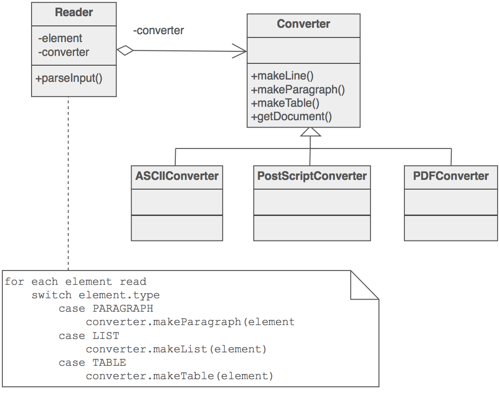

Builder
1. Usage
To implement reusable mechanize of polymorphic pipeline to generate step by step final complex product. For example function "save as" document - as HTML, RTF, PDF. each plugin for different format will have its own way to serialize - table, image or title objects.
2. UML class diagram

Source: https://sourcemaking.com/design_patterns/builder

3. Pros
4. Cons
5. Source code
//Program tested on Microsoft Visual Studio 2008 - Zahid Ghadialy
//Builder is part of Creational Patterns
//Creational Patterns deal with initializing and configuring classes and objects
//Builder Separates object construction from its representation
//We will take an example of creating Vehicles using Vehicle class.
//The VehicleBuilder is the abstract interface for creating the parts of Vehicle
//Different ConcreteBuilder classes are used to construct the final Product
//The Shop class is the Director that defines the sequence of construction
//The final product, Vehicle class shows the different type of Vehicle
//constructed and consists of different parts that can be assembles in final result
// From : http://advancedcppwithexamples.blogspot.de/2010/08/c-example-for-builder-design-pattern.html
#include <iostream>
#include <string>
#include <map>
using namespace std;
//The Product class
class Vehicle
{
public:
Vehicle(const string& vehicleType) : vehicleType_(vehicleType)
{
}
void SetPart(const string& partName, const string& partValue)
{
parts_[partName] = partValue;
}
const string& GetpartValue(const string& partName)
{
map<string, string>::const_iterator it;
it = parts_.find(partName);
if(it != parts_.end())
return it->second;
else
{
parts_[partName] = "Not found";
return parts_[partName];
}
}
void const Show(void)
{
cout << "\n---------------------------" << endl;
cout << "Vehicle Type : " << vehicleType_ << endl;
cout << "Frame : " << parts_["frame"] << endl;
cout << "Engine : " << parts_["engine"] << endl;
cout << "#Wheels : " << parts_["wheels"] << endl;
cout << "#Doors : " << parts_["doors"] << endl;
}
private:
Vehicle(); //Default constructor is private so not allowed to be used
string vehicleType_;
map<string, string> parts_;
};
//Create an abstract Builder class
class VehicleBuilder
{
public:
//Default constructor wont work as pointer needs init
VehicleBuilder()
{
vehicle = NULL;
}
//Destructor made virtual
virtual ~VehicleBuilder()
{
if(vehicle)
{
delete vehicle;
vehicle = NULL;
}
}
const Vehicle& getVehicle(void)
{
return *vehicle;
}
virtual void BuildFrame() = 0;
virtual void BuildEngine() = 0;
virtual void BuildWheels() = 0;
virtual void BuildDoors() = 0;
protected:
Vehicle* vehicle;
};
//The Concrete Builder #1 class
class MotorCycleBuilder : public VehicleBuilder
{
public:
MotorCycleBuilder()
{
vehicle = new Vehicle("MotorCycle");
}
void BuildFrame()
{
vehicle->SetPart("frame", "MotorCycle Frame");
}
virtual void BuildEngine()
{
vehicle->SetPart("engine", "500 cc");
}
virtual void BuildWheels()
{
vehicle->SetPart("wheels", "2");
}
virtual void BuildDoors()
{
vehicle->SetPart("doors", "0");
}
};
//The Concrete Builder #2 class
class CarBuilder : public VehicleBuilder
{
public:
CarBuilder()
{
vehicle = new Vehicle("Car");
}
void BuildFrame()
{
vehicle->SetPart("frame", "Car Frame");
}
virtual void BuildEngine()
{
vehicle->SetPart("engine", "2500 cc");
}
virtual void BuildWheels()
{
vehicle->SetPart("wheels", "4");
}
virtual void BuildDoors()
{
vehicle->SetPart("doors", "4");
}
};
//The Concrete Builder #3 class
class ScooterBuilder : public VehicleBuilder
{
public:
ScooterBuilder()
{
vehicle = new Vehicle("Scooter");
}
void BuildFrame()
{
vehicle->SetPart("frame", "Scooter Frame");
}
virtual void BuildEngine()
{
vehicle->SetPart("engine", "50 cc");
}
virtual void BuildWheels()
{
vehicle->SetPart("wheels", "2");
}
virtual void BuildDoors()
{
vehicle->SetPart("doors", "0");
}
};
//The Director class
class Shop
{
public:
void Construct(VehicleBuilder* vehicleBuilder)
{
vehicleBuilder->BuildFrame();
vehicleBuilder->BuildEngine();
vehicleBuilder->BuildWheels();
vehicleBuilder->BuildDoors();
}
};
int main()
{
VehicleBuilder *builder = NULL;
Shop shop; //New Instance of class created locally.
//Construct vehicle 1 and destroy instance when done
builder = new ScooterBuilder();
shop.Construct(builder);
(const_cast<Vehicle&>(builder->getVehicle())).Show();
delete builder;
//Construct vehicle 2 and destroy instance when done
builder = new CarBuilder();
shop.Construct(builder);
(const_cast<Vehicle&>(builder->getVehicle())).Show();
delete builder;
//Construct vehicle 3 and destroy instance when done
builder = new MotorCycleBuilder();
shop.Construct(builder);
(const_cast<Vehicle&>(builder->getVehicle())).Show();
delete builder;
return 0;
}